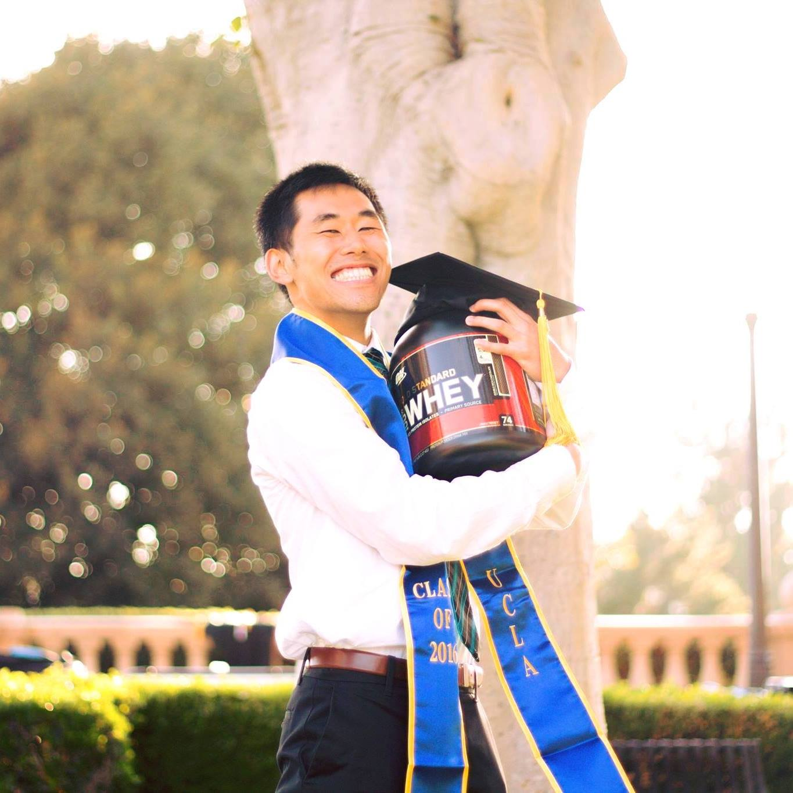

About Joseph
I graduated from UCLA in 2016 with a career lined up as a tax accountant. However, while working in tax, I began to notice how having vital software was. It could save one's day by with the auto save or ruin it by not working properly. Knowing how to use the software was important, but knowing how to improve or build your own would set you apart.
Eventually, my interest in software engineering out weighed my interest in tax accounting. From there, I toke a leap of faith and and joined Thinkful. Although, my journey has just begun, I am excited to see where it will bring me.